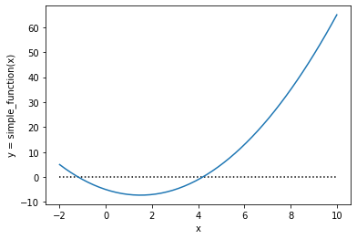
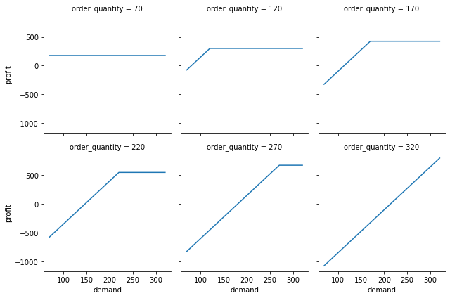
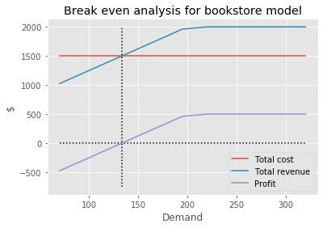

Excel “what if?” analysis with Python - Part 2: Goal seek#
This is the second installment of a multi-part series on using Python for typical Excel modeling tasks. In the first part we developed an object oriented version of a simple Excel model along with a data_table function for doing sensitivity analysis that is a generalization of Excel’s Data Table tool. The Python version allows an arbitrary number of input and output variables.
In this second part, we design and implement a goal_seek function for doing things like break even analysis. Along the way we once again explore some of Python’s more advanced features. This entire series is aimed at those who might have a strong Excel based background but only a basic familiarity with Python programming and are looking to add to their Python knowledge.
You can also read and download the notebook based tutorial from GitHub.
In this notebook, we’ll learn a bit about root finding as well as things like SciPy, partial function freezing, and function wrapping with lambda functions. When we are done, we’ll have a goal_seek function to complement our data_table function. Then in the third installment of the series, we’ll take on Monte-Carlo simulation. Each post is based on a Jupyter notebook which can be downloaded.
[1]:
import numpy as np
import pandas as pd
import matplotlib.pyplot as plt
from sklearn.model_selection._search import ParameterGrid
import seaborn as sns
import copy
[2]:
%matplotlib inline
Bookstore model#
For convenience, I’ll describe the base model we are using throughout this series of Jupyter notebook based posts. This example is based on one in the spreadsheet modeling textbook(s) I’ve used in my classes since 2001. I started out using Practical Management Science by Winston and Albright and switched to their Business Analytics: Data Analysis and Decision Making (Albright and Winston) around 2013ish. In both books, they introduce the “Walton Bookstore” problem in the chapter on Monte-Carlo simulation. Here’s the basic problem (with a few modifications):
we have to place an order for a perishable product (e.g. a calendar)
there’s a known unit cost for each one ordered
we have a known selling price
demand is uncertain but we can model it with some simple probability distribution
for each unsold item, we can get a partial refund of our unit cost
we need to select the order quantity for our one order for the year; orders can only be in multiples of 25
Goal Seek#
In addition to the type of sensitivity analysis enabled by the data_table function we created in the first post in this series, another typical Excel analytical task is to use Goal Seek to find, say, the break even level of demand. At its core, Goal Seek is just a root finder. So, in the Python world, it feels like the optimization routines in SciPy might be useful. Let’s start with the non-OO version of our Bookstore Model
Attempt at non-OO version of Goal Seek#
This got tricky but led down all kinds of interesting side paths having to do with partial function freezing, lambda functions, currying, function signatures and more. Let’s initialize our base input values.
[3]:
# Set all of our base input values
unit_cost = 7.50
selling_price = 10.00
unit_refund = 2.50
demand = 193
order_quantity = 250
Back in the first post in this series, we then created a function that took all of our base inputs as input arguments and returned a value for profit.
[4]:
def bookstore_profit(unit_cost, selling_price, unit_refund, order_quantity, demand):
'''
Compute profit in bookstore model
'''
order_cost = unit_cost * order_quantity
sales_revenue = np.minimum(order_quantity, demand) * selling_price
refund_revenue = np.maximum(0, order_quantity - demand)
profit = sales_revenue + refund_revenue - order_cost
return profit
Let’s try it out.
[5]:
bookstore_profit(unit_cost, selling_price, unit_refund, order_quantity, demand)
[5]:
112.0
A bit about root finding using a simpler example#
Now let’s try to find the break even value for demand; i.e. the level of demand that leads to a profit of zero. As mentioned above, this is a root finding problem - finding where the profit function crosses the x-axis. The SciPy package has various root finding and optimization functions.
Reading that page, we eventually get down to the root finding section and find the main function, root_scalar. Before trying to use this this function for our bookstore model, let’s consider a simpler example - a quadratic function.
[6]:
def simple_function(x):
'''x^2 - 3x - 5'''
return x ** 2 - 3 * x - 5
[7]:
simple_function(2)
[7]:
-7
[8]:
simple_function(10)
[8]:
65
[9]:
left_bracket = -2
right_bracket = 10
x = np.linspace(left_bracket, right_bracket)
y = simple_function(x)
plt.plot(x, y)
plt.xlabel('x')
plt.ylabel('y = simple_function(x)')
plt.hlines(0, left_bracket, right_bracket, linestyles='dotted')
plt.show()

To use scipy.optimize.root_scalar to find the value of x where simple_function(x) is equal to zero, we call the root_scalar and pass in the following input arguments:
the function - in our case, this is
simple_functionthe root finding method - we’ll use
bisectas it’s simple, converges, and doesn’t require any derivative information. See https://www.youtube.com/watch?v=BuwjGi8J5iA for an explanation of how bisection search works and how it can be easily implemented in Python.a bracket (required for some methods) - if we can define a range
[a, b]within which we know the root occurs such that \(f(a)\) and \(f(b)\) have different signs, we can supply it. For example, in oursimple_functionexample, we know it must cross zero somewhere between [-2, 0] and then again betwen [0, 10]. As you can imagine such a bracket will help immensely when there are multiple roots and lessen the effect of the initial guess. However, finding a range that brackets the root in a way that the sign changes at the endpoints of the bracket may be quite a difficult task.an initial guess (optional) - many root finding algorithms will perform better if we are able to give a reasonable guess as to where the root might be.
If you’ve ever used Excel’s Goal Seek tool, you may have stumbled on behaviors that are related to the list and plot above.
Goal Seek doesn’t allow you to tell it a whole lot in terms of how it attempts to find roots. We don’t get to specify the method and we don’t get to bracket the root. But, …
Goal Seek does use the current cell value of the Changing Cell as an initial guess
If our spreadsheet model does have multiple roots, the root returned by Goal Seek will depend on our initial guess.
For example, here are the results of using Goal Seek to drive simple_function(x) to 0 with different initial guesses. Note that the function is minimized at \(x=1.5\).
![image.png]()
Let’s try a few different root finding functions available in SciPy.
fsolve- this appears to be a legacy function but doesn’t require us to bracket the root such that \(f(a)\) and \(f(b)\) have different signs. Of course, the root it returns will likely be impacted by the initial guess (just as Goal Seek is).root_scalar- this is a newer, more general, function for which we can specify specifics such as the root finding algorithm. Most of the methods require a root bracket.
[10]:
from scipy.optimize import root_scalar
from scipy.optimize import fsolve
[11]:
# fsolve - very similar to Goal Seek
init_values = [-1, 0.5, 1.49, 1.5, 1.51, 2.5, 6]
[(x, fsolve(simple_function, x)) for x in init_values]
[11]:
[(-1, array([-1.1925824])),
(0.5, array([-1.1925824])),
(1.49, array([-1.1925824])),
(1.5, array([4.1925824])),
(1.51, array([4.1925824])),
(2.5, array([4.1925824])),
(6, array([4.1925824]))]
Now let’s try root_scalar.
[12]:
# Left root
init_values_1 = [-1, -0.5, 0.0]
[(x, root_scalar(simple_function, method='bisect', bracket=[-2, 0], x1=x).root) for x in init_values_1]
[12]:
[(-1, -1.1925824035661208),
(-0.5, -1.1925824035661208),
(0.0, -1.1925824035661208)]
[13]:
# Right root
init_values_2 = [0.0, 0.5, 1, 4, 10]
[(x, root_scalar(simple_function, method='bisect', bracket=[0, 10], x1=x).root) for x in init_values_2]
[13]:
[(0.0, 4.192582403567258),
(0.5, 4.192582403567258),
(1, 4.192582403567258),
(4, 4.192582403567258),
(10, 4.192582403567258)]
Great. In this contrived case in which we can easily write a function to compute the derivative of simple_function, we could use Newton’s method instead of bisection search (or others) that require bracketing. Sometimes, just bracketing the root might be really hard. Of course, then the initial guess will matter a lot and we should be able to duplicate Goal Seek’s behavior. In real spreadsheet life, we probably don’t have a closed form solution for the derivative, though we could likely
approximate it pretty well as long as it wasn’t super jumpy.
Check out http://www.math.pitt.edu/~troy/math2070/lab_04.html if you want to play around in Python with different root finding algorithms.
Anyway, let’s give Newton’s a go.
[14]:
def simple_function_prime(x):
'''Derivative of x^2 - 3x - 5'''
return 2 * x - 3
[15]:
init_values = [-1, 0.5, 1.49, 1.5, 1.51, 2.5, 6]
[(x, root_scalar(simple_function, method='newton', fprime=simple_function_prime, x0=x).root) for x in init_values]
/home/mark/anaconda3/envs/datasci/lib/python3.8/site-packages/scipy/optimize/zeros.py:295: RuntimeWarning: Derivative was zero.
warnings.warn(msg, RuntimeWarning)
[15]:
[(-1, -1.192582403567252),
(0.5, -1.1925824035672519),
(1.49, -1.192582403567252),
(1.5, 1.5),
(1.51, 4.192582403567251),
(2.5, 4.192582403567252),
(6, 4.192582403567252)]
Notice that with Newton’s Method, we got the same behavior as Goal Seek, except for when we used an initial guess of 1.5. Of course, this is the point at which simple_function is minimized and the derivative is 0. We get a warning about that and instead of arbitrarily going in one direction or the other, root_scalar just bailed and gave us back our original guess. These root finding functions actually return much more info than just the
root.
[16]:
print(root_scalar(simple_function, method='newton', fprime=simple_function_prime, x0=1))
converged: True
flag: 'converged'
function_calls: 14
iterations: 7
root: -1.192582403567252
[17]:
print(root_scalar(simple_function, method='newton', fprime=simple_function_prime, x0=1.5))
converged: False
flag: 'convergence error'
function_calls: 2
iterations: 1
root: 1.5
Try out different methods and you’ll see that some take longer than others to converge. Bisection search is known to be slow but safe.
[18]:
print(root_scalar(simple_function, method='bisect', bracket=[0, 10], x1=1))
converged: True
flag: 'converged'
function_calls: 45
iterations: 43
root: 4.192582403567258
Back to the Bookstore Model and partial functions#
You may have already been wondering how exactly we might use SciPy’s root finding functions with our bookstore_profit function since it doesn’t just have one input argument, it’s got five. How do we tell root_scalar which one of the inputs (e.g. demand) is the one we want to search over and that we want all the other arguments to remain fixed at specific values? This is a job for something known as a partial function. The idea is to
create a new function object that is based on an existing function, but with some of the function’s inputs set to fixed values. To create partial functions, we need to use the partial function from the functools library. Unfortunately, while this initially seemed easy, we quickly ran into problems. Before describing those, let’s cheat and consider an easier case. Instead of demand being the input we want to vary (i.e. Goal Seek’s changing cell), let’s use unit_cost. You’ll
notice that unit_cost is the first input argument to bookstore_profit and this might give you an idea of why things get difficult when we want to do this for demand.
[19]:
from functools import partial
[20]:
selling_price = 10.00
unit_refund = 2.50
order_quantity = 200
demand = 193
# Create the partial function in which all but the first arg to bookstore_profit are frozen
profit_unit_cost = partial(bookstore_profit, selling_price=selling_price,
unit_refund=unit_refund, demand=demand, order_quantity=order_quantity)
[21]:
type(profit_unit_cost)
[21]:
functools.partial
Let’s just make sure it works and then we’ll try some goal seeking. We know that for the inputs above and a unit cost of $7.50, we should get a profit of 437.
[22]:
profit_unit_cost(7.50)
[22]:
437.0
Let’s try to find a positive root. First let’s bracket it. If we have really low unit cost, we should have have a big positive profit. If we have a high unit cost, we should lose money.
[23]:
profit_unit_cost(1)
[23]:
1737.0
[24]:
profit_unit_cost(10)
[24]:
-63.0
[25]:
root_scalar(profit_unit_cost, method='bisect', bracket=[1, 10], x1=1)
[25]:
converged: True
flag: 'converged'
function_calls: 45
iterations: 43
root: 9.685000000000286
Terrific. But what happens if we try to do this to find the break even demand level?
[26]:
# Set all of our base input values
unit_cost = 7.50
selling_price = 10.00
unit_refund = 2.50
order_quantity = 200
Create a new partial function. Watch what happens when we try to use it.
[27]:
profit_demand = partial(bookstore_profit, unit_cost=unit_cost, selling_price=selling_price,
unit_refund=unit_refund, order_quantity=order_quantity)
print(profit_demand(193))
---------------------------------------------------------------------------
TypeError Traceback (most recent call last)
<ipython-input-70-babba58828f2> in <module>
----> 1 print(profit_demand(193))
TypeError: bookstore_profit() got multiple values for argument 'unit_cost'
What happened? Our new partial function takes a single positional argument. Since unit_cost is the first argument in our original function definition, it wants to assign the 193 to unit_cost. Then, when we also supply the unit_cost=unit_cost named argument, Python complains because unit_cost already has a value. We didn’t get the error when we goal seeked for unit_cost because it’s the first argument in the original function. The bigger issue is that we don’t know which of
our five input arguments the user might want to use for goal seeking. In essence, we need to wrap our original function in another function that does nothing but move the goal seek variable into the first position of the function’s argument list. Feels like a job for a lambda function. See https://stackoverflow.com/questions/51583924/python-typeerror-multiple-arguments-with-functools-partial for a good discussion of this issue and a lambda function based solution (in the comments).
[28]:
profit_demand_2 = partial(lambda d, uc, sp, uf, oq: bookstore_profit(uc, sp, uf, oq, d),
uc=unit_cost, sp=selling_price,
uf=unit_refund,
oq=order_quantity)
[29]:
print(profit_demand_2(0))
-1300.0
[30]:
print(profit_demand_2(193))
437.0
[31]:
root_scalar(profit_demand_2, method='bisect', bracket=[0, 193], x1=1)
[31]:
converged: True
flag: 'converged'
function_calls: 49
iterations: 47
root: 144.4444444444448
Yep, this matches what I found with Excel’s Goal Seek tool. Unfortunately, this is not a very satisfying solution since we custom crafted a lambda function to alter the function signature of bookstore_profit specifically to work for the demand input. But, what if we want a different input variable, such as selling_price, to be the subject of our goal seek (the changing cell in Excel terminology)?
This StackOverflow question, solution and comment, hit the nail right on the head.
And down the rabbit hole we go?#
Ok, for a given variable for which to goal seek, we can write a partial lambda function to pass into a root finding finding function such as root_scalar. But, how can we create a function that creates the partial lambda function and that takes as input the base bookstore_profit function and the name of the keyword argument representing the decision variable (the changing cell in Goal seek)? This led to an interesting journey through things like:
https://stackoverflow.com/questions/14261474/how-do-i-write-a-function-that-returns-another-function
The
inspectmodule for digging into the guts of Python function objects to look at things like function signatures and even the source code of a function (inspect.getsourcelines()).Signature objects are important and powerful for function meta-programming.
However, ultimately, I gave up early since I was pretty much already sold on using an OO approach to this general Excel modeling in Python endeavor. Since, the profit method of our BookstoreModel class doesn’t require any inputs other than self, this problem goes away. I’m sure some Python wizard knows how to solve this problem, but for now, let’s go back to the OO approach. If I come up with something good on this lambda function creator, I’ll do a follow up post.
Goal Seeking with the OO BookstoreModel#
Back in the first post of the series, we created a BookstoreModel class which contained methods for computing profit and other output measures, updating input parameters, and some other useful tasks. Here’s the class we ended up with:
[32]:
class BookstoreModel():
def __init__(self, unit_cost=0, selling_price=0, unit_refund=0,
order_quantity=0, demand=0):
self.unit_cost = unit_cost
self.selling_price = selling_price
self.unit_refund = unit_refund
self.order_quantity = order_quantity
self.demand = demand
def update(self, param_dict):
"""
Update parameter values
"""
for key in param_dict:
setattr(self, key, param_dict[key])
def order_cost(self):
return self.unit_cost * self.order_quantity
def sales_revenue(self):
return np.minimum(self.order_quantity, self.demand) * self.selling_price
def refund_revenue(self):
return np.maximum(0, self.order_quantity - self.demand) * self.unit_refund
def total_revenue(self):
return self.sales_revenue() + self.refund_revenue()
def profit(self):
'''
Compute profit in bookstore model
'''
profit = self.sales_revenue() + self.refund_revenue() - self.order_cost()
return profit
def __str__(self):
"""
Print dictionary of object attributes but don't include an underscore as first char
"""
return str({key: val for (key, val) in vars(self).items() if key[0] != '_'})
In the first post we also created a data_table function that takes a BookstoreModel object as input along with input variable ranges and a list of desired outputs to implement the equivalent of general Excel Data Table function which allows an arbitrary number of both inputs and outputs. Recall that in Excel we can either do a 1-way Data Table with any number of outputs or a 2-way table with a single output.
Here’s that function and quick recap of its use.
[33]:
def data_table(model, scenario_inputs, outputs):
'''Create n-inputs by m-outputs data table.
Parameters
----------
model : object
User defined object containing the appropriate methods and properties for computing outputs from inputs
scenario_inputs : dict of str to sequence
Keys are input variable names and values are sequence of values for each scenario for this variable. Is consumed by
scikit-learn ParameterGrid() function. See https://scikit-learn.org/stable/modules/generated/sklearn.model_selection.ParameterGrid.html
outputs : list of str
List of output variable names
Returns
-------
results_df : pandas DataFrame
Contains values of all outputs for every combination of scenario inputs
'''
# Clone the model using deepcopy
model_clone = copy.deepcopy(model)
# Create parameter grid
dt_param_grid = list(ParameterGrid(scenario_inputs))
# Create the table as a list of dictionaries
results = []
# Loop over the scenarios
for params in dt_param_grid:
# Update the model clone with scenario specific values
model_clone.update(params)
# Create a result dictionary based on a copy of the scenario inputs
result = copy.copy(params)
# Loop over the list of requested outputs
for output in outputs:
# Compute the output.
out_val = getattr(model_clone, output)()
# Add the output to the result dictionary
result[output] = out_val
# Append the result dictionary to the results list
results.append(result)
# Convert the results list (of dictionaries) to a pandas DataFrame and return it
results_df = pd.DataFrame(results)
return results_df
Okay, let’s try it out.
[34]:
# Create a dictionary of base input values
base_inputs = {'unit_cost': 7.5,
'selling_price': 10.0,
'unit_refund': 2.5,
'order_quantity': 200,
'demand': 193}
[35]:
# Create a new model with default input values (0's)
model_6 = BookstoreModel()
print(model_6)
model_6.profit()
{'unit_cost': 0, 'selling_price': 0, 'unit_refund': 0, 'order_quantity': 0, 'demand': 0}
[35]:
0
[36]:
# Update model with base inputs
model_6.update(base_inputs)
print(model_6)
{'unit_cost': 7.5, 'selling_price': 10.0, 'unit_refund': 2.5, 'order_quantity': 200, 'demand': 193}
[37]:
# Specify input ranges for scenarios (dictionary)
dt_param_ranges = {'demand': np.arange(70, 321, 25),
'order_quantity': np.arange(70, 321, 50)}
# Specify desired outputs (list)
outputs = ['profit', 'order_cost']
# Use data_table function
m6_dt1_df = data_table(model_6, dt_param_ranges, outputs)
m6_dt1_df
[37]:
| demand | order_quantity | profit | order_cost | |
|---|---|---|---|---|
| 0 | 70 | 70 | 175.0 | 525.0 |
| 1 | 70 | 120 | -75.0 | 900.0 |
| 2 | 70 | 170 | -325.0 | 1275.0 |
| 3 | 70 | 220 | -575.0 | 1650.0 |
| 4 | 70 | 270 | -825.0 | 2025.0 |
| ... | ... | ... | ... | ... |
| 61 | 320 | 120 | 300.0 | 900.0 |
| 62 | 320 | 170 | 425.0 | 1275.0 |
| 63 | 320 | 220 | 550.0 | 1650.0 |
| 64 | 320 | 270 | 675.0 | 2025.0 |
| 65 | 320 | 320 | 800.0 | 2400.0 |
66 rows × 4 columns
Let’s plot the results using Seaborn.
[38]:
profit_dt_g = sns.FacetGrid(m6_dt1_df, col="order_quantity", sharey=True, col_wrap=3)
profit_dt_g = profit_dt_g.map(plt.plot, "demand", "profit")

Adding a goal_seek function#
As seen earlier in this notebook, there were a bunch of issues that popped up in trying to use SciPy’s root finding functions with the non-OO model. For the OO model, it felt like I’d end up with similar problems in trying to write some sort of generic wrapper that would create functions to pass into things like root_scalar. Instead, I decided to simply bypass SciPy and write my own root finder that I could tailor to our goal seeking problem. When I say “write”, I mean find a good
implementation that someone has already done and tweak it.
For example, https://github.com/patrickwalls/mathematical-python/ has nice implementations of various root finding methods. It was a pretty simple matter to adapt the bisection function he wrote in this notebook to use in my goal_seek function.
[39]:
def goal_seek(model, obj_fn, target, by_changing, a, b, N=100):
'''Approximate solution of f(x)=0 on interval [a,b] by bisection method.
Parameters
----------
model : object
User defined object containing the appropriate methods and properties for doing the desired goal seek
obj_fn : function
The function for which we are trying to approximate a solution f(x)=target.
target : float
The goal
by_changing : string
Name of the input variable in model
a,b : numbers
The interval in which to search for a solution. The function returns
None if (f(a) - target) * (f(b) - target) >= 0 since a solution is not guaranteed.
N : (positive) integer
The number of iterations to implement.
Returns
-------
x_N : number
The midpoint of the Nth interval computed by the bisection method. The
initial interval [a_0,b_0] is given by [a,b]. If f(m_n) - target == 0 for some
midpoint m_n = (a_n + b_n)/2, then the function returns this solution.
If all signs of values f(a_n), f(b_n) and f(m_n) are the same at any
iteration, the bisection method fails and return None.
'''
# TODO: Checking of inputs and outputs
# Clone the model
model_clone = copy.deepcopy(model)
# The following bisection search is a direct adaptation of
# https://www.math.ubc.ca/~pwalls/math-python/roots-optimization/bisection/
# The changes include needing to use an object method instead of a global function
# and the inclusion of a non-zero target value.
setattr(model_clone, by_changing, a)
f_a_0 = getattr(model_clone, obj_fn)()
setattr(model_clone, by_changing, b)
f_b_0 = getattr(model_clone, obj_fn)()
if (f_a_0 - target) * (f_b_0 - target) >= 0:
# print("Bisection method fails.")
return None
# Initialize the end points
a_n = a
b_n = b
for n in range(1, N+1):
# Compute the midpoint
m_n = (a_n + b_n)/2
# Function value at midpoint
setattr(model_clone, by_changing, m_n)
f_m_n = getattr(model_clone, obj_fn)()
# Function value at a_n
setattr(model_clone, by_changing, a_n)
f_a_n = getattr(model_clone, obj_fn)()
# Function value at b_n
setattr(model_clone, by_changing, b_n)
f_b_n = getattr(model_clone, obj_fn)()
# Figure out which half the root is in, or if we hit it exactly, or if the search failed
if (f_a_n - target) * (f_m_n - target) < 0:
a_n = a_n
b_n = m_n
elif (f_b_n - target) * (f_m_n - target) < 0:
a_n = m_n
b_n = b_n
elif f_m_n == target:
#print("Found exact solution.")
return m_n
else:
#print("Bisection method fails.")
return None
# If we get here we hit iteration limit, return best solution found so far
return (a_n + b_n)/2
Let’s give it a whirl to find break even demand for our standard set of inputs. We know the answer from earlier in this notebook.
[40]:
goal_seek(model_6, 'profit', 0, 'demand', 0, 1000)
[40]:
133.33333333333334
Let’s end this post by putting it all together and creating a plot that shows total revenue, total cost, profit and the break even point as functions of demand.
[41]:
# Specify input ranges for scenarios (dictionary)
dt_param_ranges = {'demand': np.arange(70, 321, 25)}
# Specify desired outputs (list)
outputs = ['profit', 'order_cost', 'total_revenue']
# Use data_table function to create dataframe
m6_dt2_df = data_table(model_6, dt_param_ranges, outputs)
# Use goal_seek to compute break even demand
break_even_demand = goal_seek(model_6, 'profit', 0, 'demand', 0, 1000)
[42]:
m6_dt2_df
[42]:
| demand | profit | order_cost | total_revenue | |
|---|---|---|---|---|
| 0 | 70 | -475.0 | 1500.0 | 1025.0 |
| 1 | 95 | -287.5 | 1500.0 | 1212.5 |
| 2 | 120 | -100.0 | 1500.0 | 1400.0 |
| 3 | 145 | 87.5 | 1500.0 | 1587.5 |
| 4 | 170 | 275.0 | 1500.0 | 1775.0 |
| 5 | 195 | 462.5 | 1500.0 | 1962.5 |
| 6 | 220 | 500.0 | 1500.0 | 2000.0 |
| 7 | 245 | 500.0 | 1500.0 | 2000.0 |
| 8 | 270 | 500.0 | 1500.0 | 2000.0 |
| 9 | 295 | 500.0 | 1500.0 | 2000.0 |
| 10 | 320 | 500.0 | 1500.0 | 2000.0 |
[43]:
plt.style.use('ggplot')
fig, ax = plt.subplots()
demand = np.array(m6_dt2_df['demand'])
cost = np.array(m6_dt2_df['order_cost'])
revenue = np.array(m6_dt2_df['total_revenue'])
profit = np.array(m6_dt2_df['profit'])
ax.plot(demand, cost, label='Total cost')
ax.plot(demand, revenue, label='Total revenue')
ax.plot(demand, profit, label='Profit')
ax.set(title='Break even analysis for bookstore model', xlabel='Demand', ylabel='$')
plt.hlines(0, 70, 320, linestyles='dotted')
plt.vlines(break_even_demand, -750, 2000, linestyles='dotted')
ax.legend(loc='lower right')
plt.show()

Wrap up and next steps#
We have added a goal_seek function to our small but growing list of functions for doing Excelish things in Python. Yes, we can certainly improve our goal_seek implementation with better root finding algorithms, but this is good enough for now.
Along the way, hopefully you learned some new Python things, I know I did.
In the next installment of this series, we’ll take on Monte-Carlo simulation.
[ ]: